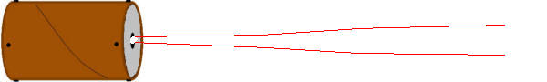
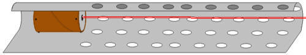
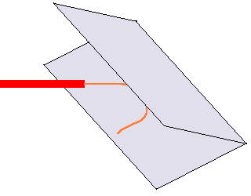
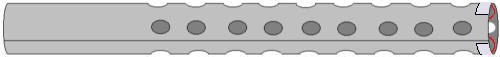
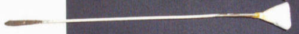

The Improv
by
Tom Spooner
|
This month's oddball tip: Ice Chests - Consider using ice chests as durable, lightweight, somewhat padded, innocuous-appearing trunks and footlockers for your survival gear. Toss them in the back of your truck, and it looks like you're going camping. And where some cops have been known to consider the sight of surplus ammo cans and duffel bags to be probable cause to search for a weapons search, a Coleman cooler doesn't give away the fact that it holds several thousand rounds of ammunition.
 Buy my book!
Rocket-Propelled Whatsit:: Part 2 of 4
If you didn't blow yourself up last month, let's move on to the body of the rocket. You'll need:
Start by installing the igniter in your motor. With a standard model rocket, you would not do this (and it isn't usually advisable), but it would be tough to put in after the fuselage is assembled. Just be careful not to let anything spark the igniter leads; that could set off the rocket. Take your wire and cut it into two equal length pieces. Strip about half an inch of insulation from each end of both wires. Attach one end of each wire to one lead of the igniter. Stick the igniter into the motor nozzle, making sure it touches the propellant. Wedge it in place with some tissue paper.
 Take the cardboard and cut out a piece 14 inches wide by 34 inches long. Starting 10 inches from one end (which I'll call the front), cut an array of 1 inch holes in the cardboard. This rocket isn't going to have fins; it'll rely on the drag caused by these holes for very rough guidance.
Apply a bead of glue around your motor and wrap the perforated cardboard around it, with the igniter wires extending to the back end of the assembly. Glue the seam of the tube you made. The front of the tube should extend 4 inches beyond the front of the motor. This 4 inches will give you some payload space.
 Out in the field, you need a convenient way to make electrical contact with the igniter leads. Make two electrical contacts by sandwiching each trailing wire in a fold of aluminum foil.
 Glue the aluminum contacts to the outside back of the rocket body. The contacts must not touch each other. The outer surface of the contacts must not be covered by the glue. You should have something along these lines:
 In a later section, we'll build a launch tube which will be equipped with a matching set of electrical contacts. You'll make contact simply by inserting the rocket into the launcher.
Next month: Warhead
Letters:
Rating = Good You don't "attach" the spearpoint to the dart body. The point is part of the shaft. To quote myself:
Pound the end of the dart shaft flat. File to a point. Here's one made that way. 
Rating = Excellent Fifty bucks is a bit high even for a commercial gun. I'm happy you liked our article. Jammers
A device to interrupt communications of various frequencies - cell phone, radio
etc - over a small area? Sounds like what you want is a wideband signal generator and an antenna. I used to do this to dumbasses in my dorm many years ago, when they'd crank up their radios at 3:00AM. I'd just sweep the FM band until I got to the station they were listening to, and over-power the station's signal. An unmodulated carrier gave them dead silence. Or my generator had a modulation function that let me tell them to turn the damned radio off. Bussjaeger says you aren't a subscriber, and nothing appeared in my e-gold account, so I won't outline a specific project for you. As Bussjaeger says, TANSTAAFL. If you need gear, check out Ramsey Electronics or some other source. Sometimes military surplus auctions offer decent gear; look for something like an old HP 8640B. If you want to hit a wider area, get an amplifier. You'll need a frequency listing for various services.
|